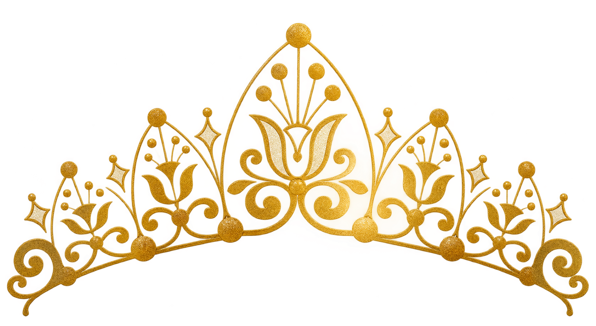
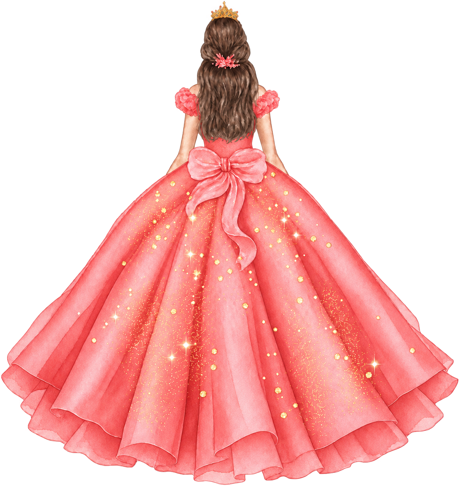

La ceremonia
Misa
7:00 p. m.
Parroquia del Amor
Misericordioso de Jesús

Acompáñanos a celebrar los
15 años de
Viernes
Salón Durango Palace
o regalo
¡Celebremos juntos!

Cada vez falta menos
30 de octubre · 7:00 p. m. · Durango
Con todo mi cariño
Oscar Omar Reyna Vargas
Fátima Ruiz Colesio
Vianey Sariñana Roacho
José Luis Morales Ramírez
Viernes · 30 de octubre de 2026
Dos momentos especiales para compartir contigo.
La ceremonia
7:00 p. m.
Parroquia del Amor
Misericordioso de Jesús
La celebración
8:30 p. m.
Salón de eventos
Durango Palace
Para disfrutar la noche
Consultando cuándo estará disponible el pronóstico…
Para una celebración nocturna, considera llevar un chal ligero que combine con tu atuendo.
El pronóstico se actualizará automáticamente cerca del evento. Datos meteorológicos: Open-Meteo.Para este día especial
Traje formal
El rosa salmón está reservado
para la quinceañera.
Lluvia de sobres o regalo
Tu compañía es lo más especial
de esta celebración.